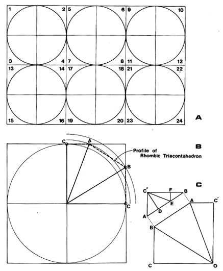

Fig. 986.508 Six Intertangent Great-circle Discs: Twelve-inch module grids divided into 24 quadrant blanks at A Profile of rhombic triacontahedron superimposed on quadrant at B.
Copyright © 1997 Estate of R. Buckminster Fuller